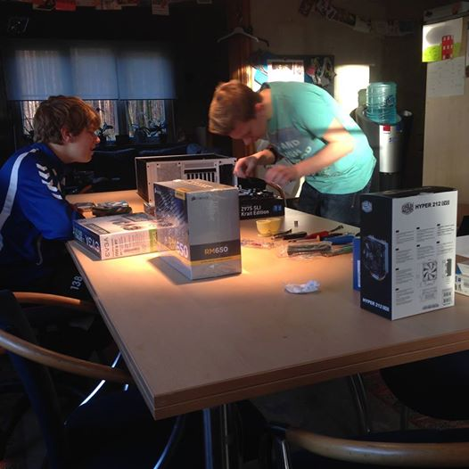

string name = “streavyoG ocmeR”;
name = name.Reverse();
Console.WriteLine(name);
“Remco Goyvaerts”
Well, so now you know my name. I’m 17 years old and I go to the Immaculata Instituut in Oostmalle. I am currently in my last year of an IT course in secondary school. With this giant string (no not the underpants, but the IT string) of text I’m going to explain to you what IT did to my life and what it will be doing in the future years.
Since my youth I’ve been in touch with IT, because my mother works in the IT sector. I saw her programming all day long and that’s when my interest started to grow. I wanted to experience more on the computer and was spending more and more time on the computer. In primary school, I went to typing lessons so I can type fairly fast. My interest kept growing and when I went to my first year in secondary school, I bought my first computer. It was an HP laptop, but when I think about it now, it was pretty crappy. But actually that’s the laptop with which I learned all the basics of computer and IT. My grandmother has that laptop now, because in 3rd or 4th grade, I bought a new, better laptop. In the meantime, this laptop was replaced last year with a desktop PC. I like this one better than the laptops because this one goes way faster. But with what I do, I could use that.
In the present, IT means almost the world to me. It’s very important in my life and I come in touch with it at least every day. I feel like it connects people with each other and makes life in one way more complex. But in another way, it simplifies so many things. I like the sound of that. I play a lot games with my friends, but I also work with Photoshop and do some programming at home. So a fast computer comes in really handy. Sometimes, I just browse
the internet, for example, on Facebook, or YouTube. These two sites I most often use when I surf. I did build my computer myself, together with my brother’s PC. And if anyone of my friends has any PC problems, I instantly try to fix the problem and help them. But sometimes, I do have some problems myself, mostly these problems aren’t hardware problems in which my PC won’t start or anything, but if I want to program something, I don’t always have that much inspiration or creativity. So I don’t always know what to do. I spend around 20 hours a week on my computers. It used to be much more. But it was too much and it almost felt like I “didn’t have a life”. I like the balance I’m having right now between seeing friends and doing sports on one side, and playing/working on my computer on the other side. So I’ll try to keep it this way. There definitely is an evolution in my computer skills. Almost every day I learn something more. I like to learn new things about computers and IT.
In my future plans, I definitely see a lot of IT involved. I like IT so much. It cannot stop existing in my life. I really want to go on studying IT and later in my life, I want to work with something in IT. I don’t really know what specifically, but I know it has something to do with IT. I hope I can continue studying with my friends I got to know in class right now. I’ll keep on seeing them all my life because they help me in IT and in other aspects of life they are always there for me.
To conclude, PC and IT have had a really big influence in my life. And I know it will keep doing that. It brought so many fun things in my life, it made me a happier person in life. I can’t stop enjoying working with my PC.
IT Profile
HTML & CSS
- Known65
- Not Known35
C#
- Known60
- Not Known40
Javascript
- Known65
- Not Known35
Lua
- Known55
- Not Known45
Windows 7
- Known75
- Not Known25
Windows 8
- Known80
- Not Known20
Windows 10
- Known85
- Not Known15
Xubuntu
- Known60
- Not Known40